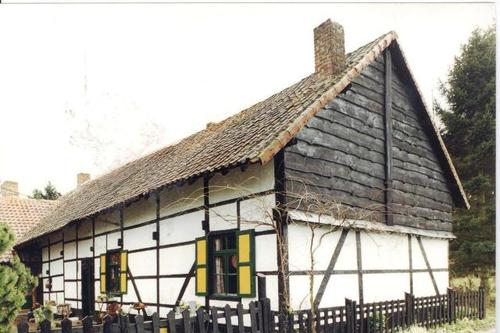

Wat je hier kan doen

Workshops
Van cyder maken tot groenten oogsten — leren met je handen.

Cyder maken
Van eigen fruit tot in het glas, stap voor stap.

Open tafel
Maandelijks samen eten — pay what you can.

Bij de dieren
Verzorgen, ontdekken en gewoon even bij hen zijn.

Hoevewinkel
Lokale producten, rechtstreeks van het land.